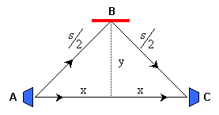
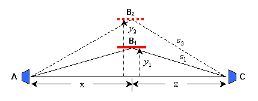
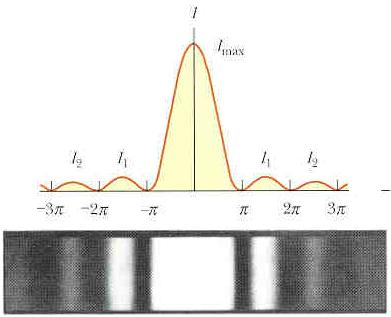

|
224 Physics Lab: Interference and Diffraction of Microwaves
|
223 & 224 Lab Overview |
Return to Physics 224 Labs
Purpose
The purpose of this lab experiment is study interference and diffraction of light waves
using the microwave apparatus.
Background
| Lloyd's Mirror Experiment |
In the previous experiment, you observed how a single electromagnetic wave can be
diffracted into two waves, causing constructive and destructive interference to occur.
The same result may be achieved using Lloyd's Mirror, providing a convenient
method for measuring the wavelength of the radiation.
| |
|

|
|
Figure 1. Lloyd's Mirror.
|
A diagram of Lloyd's Mirror is found in Figure 1.
Here electromagnetic radiation from one source at point A is detected by a
receiver at point C. If radiation from A is reflected off a mirror
at point B, the reflected wave will also be detected by the receiver. Due
to the reflection from the mirror, the reflected wave will be 180° out of
phase with respect to the incident wave. When the two waves meet at the receiver,
constructive and destructive interference can occur. A maximum signal will be
detected when the two waves reach the detector in phase.
From Figure 1, the optical path length,
,
of the reflected wave is defined as
. The optical path length of the un-reflected
wave is
| |
|

|
|
Figure 2. Lloyd's Mirror with two optical path lengths displayed for
the reflected wave.
|
For constructive interference to occur, the optical path lengths for the reflected
wave and the un-reflected wave must be some multiple of the wavelength,
 .
The position of the mirror,
,
may be varied to obtain a series of maxima and minima intensities at the receiver
as shown in Figure 2.
Therefore, for particular values of
the condition for constructive interference is .
The position of the mirror,
,
may be varied to obtain a series of maxima and minima intensities at the receiver
as shown in Figure 2.
Therefore, for particular values of
the condition for constructive interference is
where
.
The quantity
is the fringe number. Fringes can be seen as the dark and light bands of
Figure 3.
| |
|

|
|
Figure 3. A fringe pattern for the single-slit Fraunhofer
diffraction pattern. (From Serway and Beichner, 5th
Edition, page 1218.)
|
The background for the double-slit experiment will be given to you by your TA.
Objectives
- Setup the Lloyd's Mirror experiment and reposition the mirror to
obtain as many fringes as possible. For each subsequent fringe number,
determine a value for .
Average these values to find a mean value for .
Determine the standard deviation for the measurements.
- Use your data from Objective 1 and make a plot to determine
.
- Setup a double-slit apparatus using the provided materials. Take readings of
intensity of the diffracted wave through a large angle using small increments,
being sure to also obtain the angles of
maximum intensities. Make a plot of intensity versus angle.
Use one of your previous calculations of
and determine the slit separation,
. Perform a propagation of uncertainty for this objective.
Equipment and setup
- (Figure 4.) Lloyd's mirror setup.
- (Figure 5.) Double slit diffraction setup.
|
[Click on images to enlarge.]
| 4 |

|
5 |

|
|
Hints and Cautions
- Caution!!! Although the microwave power levels from this apparatus are
not harmful, microwaves do cause water molecules to resonate, therefore
never point the klystron (transmitter) at your body, especially toward your
eyes.
- Allow the klystron about 2 minutes to warm up before beginning your
experiment.
- Objective 1 requires very careful experimentation techniques. Keep the
equipment properly aligned.
Online Assistance
- Adding a non-linear
trendline to an Excel plot
- Clemson Physics Lab Tutorials
- Using Excel
Lab Report Template
Each lab group should
download the Lab Report Template
and fill in the relevant information
as you perform the experiment. Each person in the group
should print-out the Questions section and answer them individually.
Since each lab group will turn in an electronic copy of the lab report,
be sure to rename the lab report template file. The naming convention is as
follows:
[Table Number][Short Experiment Name].doc.
For example the group at lab
table #5 working on the Ideal Gas Law experiment would rename their template file
as "5 Gas Law.doc".
Questions
Each student should
download the questions.
Each person in the group
should print out the questions and answer them individually.
Discussing the questions as a group is acceptable, but each student is responsible
for turning in answers that represent their own work, not the work of others.
Nudge Questions
These Nudge Questions are to
be answered by your group and checked by your TA as you do the lab. They
should be answered in your lab notebook.
Objective 1 Nudges
- Are the initial locations of the transmitter and receiver important to
consider?
- From what points are the graduations on the goinometer referenced?
- How did you calculate the optical path length for the reflected waves?
- How many fringes were you able to detect?
- Why does the intensity of the fringes decrease as
increases?
- How many calculations of
were you able to make?
- What is the standard deviation of the
measurements?
- What do you expect the value of
to be?
Objective 2 Nudges
- What parameters will you plot to determine
?
- How did the Objective 2 and 3 values of
compare?
Objective 3 Nudges
- Are the initial locations of the transmitter and receiver important to
consider?
- What is the initial angle of the receiver?
- Should the transmitter be moved during the experiment?
- How many intensity readings did you make? Why?
- How many fringes did you detect?
- Why does the intensity of the fringes decrease with angle?
- How will you calculate the slit separation?
- How will you measure the slit separation?
- How does the calculation and measurement of
compare?
TA Notes
Data, Results and Graphs
Answers to Questions
Lab Manual
CUPOL Experiments
As of now, there are no
CUPOL experiments
associated with this experiment.
If you have a question or comment, send an e-mail to Lab Coordinator:
Jerry Hester
223 & 224 Lab Overview |
Return to Physics 224 Labs
|